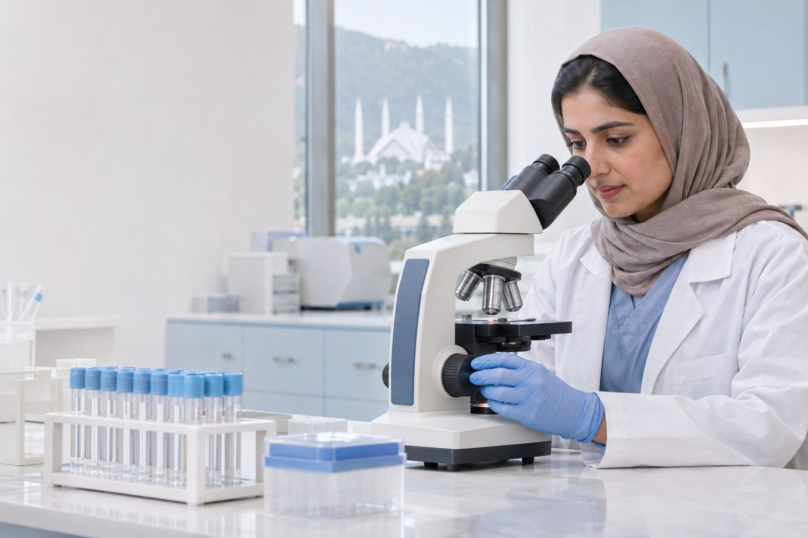
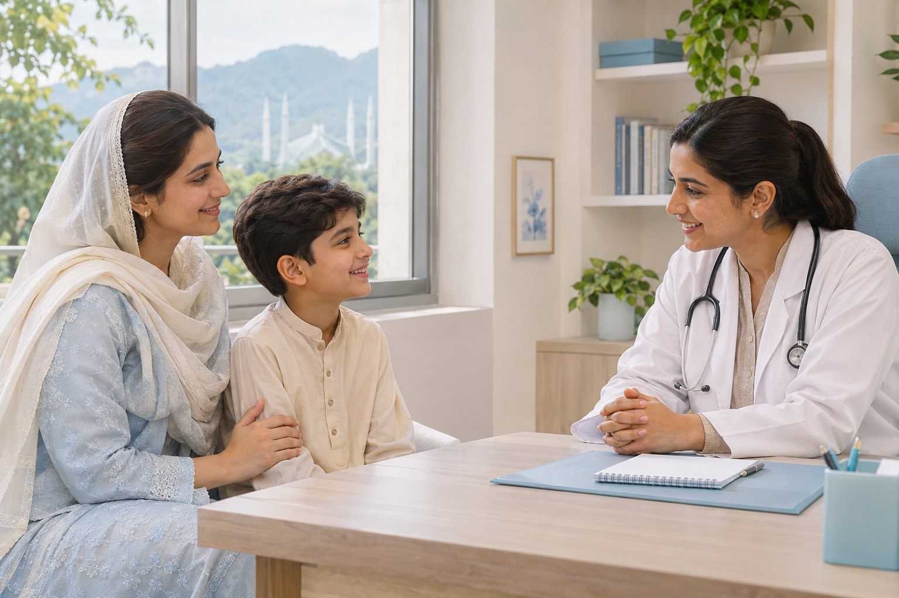
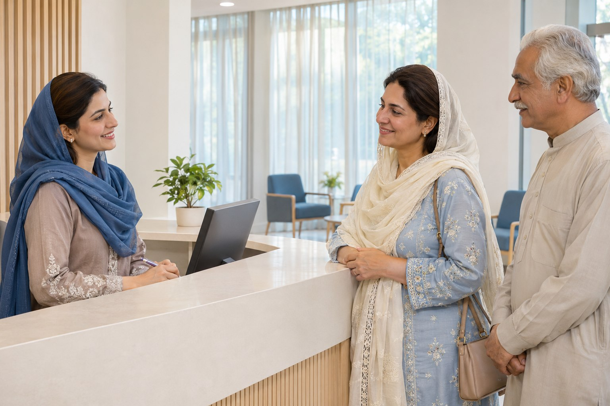

Better health starts with
a clearer picture.
Understand more. Worry less. Move forward.
Diagnostics and specialist care, together in Islamabad.
One place.
More peace of mind.
Within reach.Ask our team about report access ↗ Thoughtful care, from the very first step.
Health can feel complicated.
Finding the right care shouldn’t.
HM Diagnostics & Clinics brings laboratory testing, imaging, and specialist consultations together for our community in Islamabad.
One familiar place to ask questions, find support, and take your next step with confidence.
Your health is personal. Your care should feel that way, too. We combine modern diagnostic technology with qualified doctors and a patient-focused approach.
From a routine check to a specialist consultation, our purpose is to help you move forward with greater understanding.
More understanding.
Less running around.
A test is one part of your health story. Bring the rest of your questions, too. Our diagnostic services and medical specialists help you see the bigger picture.
Find your care ↗ONE SHARED COMMITMENT TO YOU.
Your health deserves
your next step.
We’ll help you make it a simple one.
Start with a
conversation.
Tell us what you need. Our team can help with appointment availability, services, and preparation before you arrive.
- Call or message our clinic team
- Ask about your test or specialist
- Confirm your visit and preparation
Different needs.
The same thoughtful care.
From a health question to a clearer understanding,
find the service that supports your next step.

A closer look.
A clearer picture.
Good care is personal.
It should feel that way.
Modern diagnostics. Experienced doctors.
And the time to listen to what matters to you.


A few questions.
A little more clarity.
Can’t find what you need?
Our team is here to help ↗
How do I arrange an appointment?+
Call 0334-6333044 or 051-2340199, or message our team on WhatsApp. Ask about your service or preferred specialist, then confirm availability and any preparation before visiting.
Which services are available?+
HM offers laboratory testing, MRI / CT scan, ultrasound, digital X-ray, ECHO / ECG, ETT, NCS, endoscopy, a hearing center, physiotherapy, and a pharmacy, alongside a range of specialist clinics.
Do I need to prepare for a test?+
Preparation depends on the test or scan. Please contact our team before your visit to confirm the instructions for your specific service.
Can I access reports online?+
HM offers online reporting. Ask our team how to access your report and when it will be available for your particular test.
Where can I find the clinic?+
You’ll find HM Diagnostics & Clinics at Crescent Arcade #13, 14, G8 Markaz, Islamabad. Get directions ↗
Make room for
your health.
A question, a check-up, a fresh start.
Whatever brings you here, let’s begin.